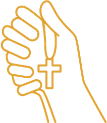

Artigos religiosos feitos
com carinho para momentos
especiais de fé.
Atendimento próximo e personalizado
Produtos escolhidos com muito carinho

Para os seus momentos de féEncontre o que você procura
Imagens Religiosas
Terços
Kits Especiais
Lembranças e Presentes
Escolhidos com fé para momentos especiais
Produtos que acompanham as suas celebrações e tornam cada momento ainda mais significativo.
Ver catálogo